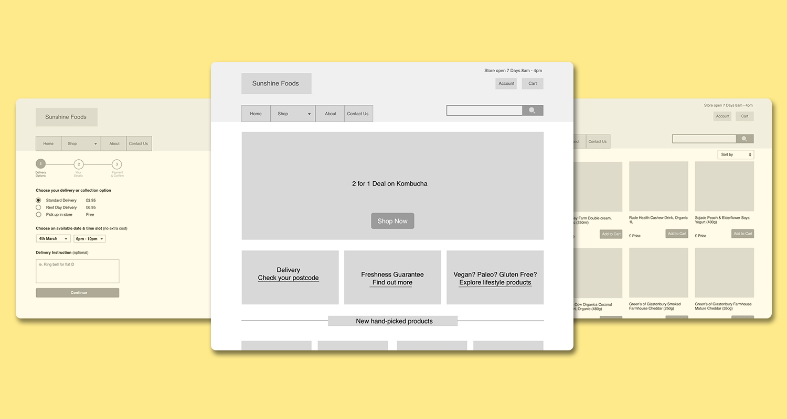
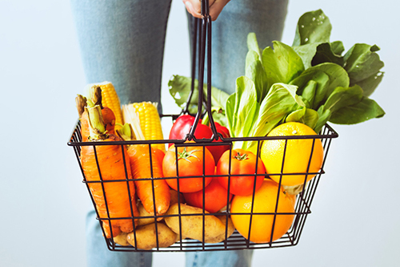
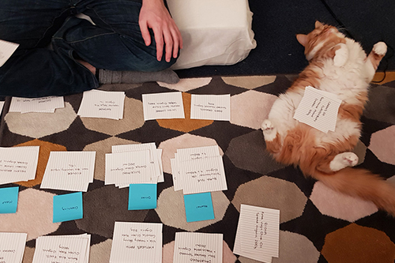
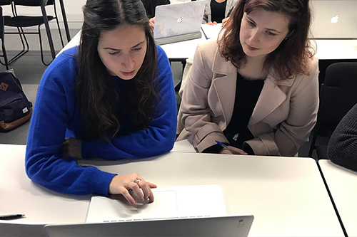
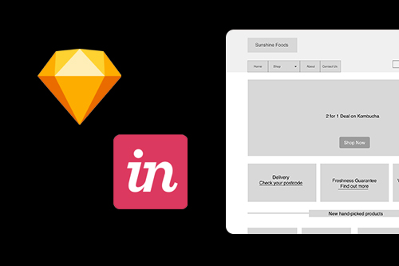

Sunshine Foods Grocery Website
CONCEPT - 2 WEEK SPRINT - SOLO
Brief
Sunshine Foods is a bespoke, local London organic grocery store offering a highly curated inventory. My task was to create an online website that establishes trust in fresh products and rewards loyalty while maintaining the local store feel.
Process & Deliverables
- Site Visit
- Competitive Analysis
- User Interviews x7
- Data Synthesis
Discover
- Card Sorting
- Jobs to be Done
- Site Map
Define
- Sketches
- User Flow
- Mid-fi Wireframes
- User Testing x5
Develop
- Mid-Fi Mockup
- Clickable Prototype
- 5min Presentation
Deliver
Solution
I studied the Information Architecture and card sorting data to create an intuitive navigation and explored UX best practises to create a frictionless account creation and checkout flow. User testing helped me refine and iterate a smooth user journey.
Read Full Case StudyOverview of Key Deliverables

Site Visit
To observe how people shop.
Top 3 insights
- Check integrity of products
- Distracted by discounts and offers
- Shop with a purpose in mind

Card Sorting
To identify trends in how users group products to influence information architecture of site.
Top 3 insights
- Bakery, Dairy and Fruit standard
- Influenced by mental model of stores
- Where does hummous go?

User Testing
To assess the viability and usability of the prototype.
Top 3 insights
- Loved multiple images of products
- Loved freshness guarantee
- Didn't like sign up process

Read Full Case Study
Prototype
To test redesigns with users and present the concept.
Software used
- Invision for paper prototypes
- Sketch for mid-fi designs
- InVision for final prototype